Selected Publications (All Publications)
| 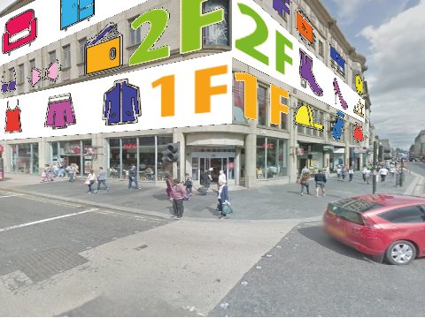 |
FloorLevel-Net: Recognizing Floor-Level Lines with Height-Attention-Guided Multi-task Learning Mengyang Wu, Wei Zeng*, Chi-Wing Fu* IEEE Transactions on Image Processing, vol. 30, pp. 6686-6699, 2021. [Code & Data] [Paper] |
| 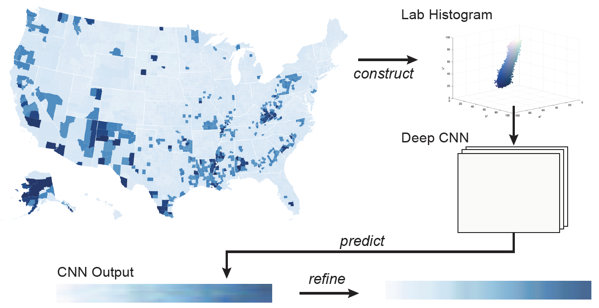 |
Deep Colormap Extraction from Visualizations Lin-Ping Yuan, Wei Zeng*, Siwei Fu, Zhiliang Zeng, Haotian Li, Chi-Wing Fu, Huamin Qu IEEE Transactions on Visualization and Computer Graphics, 2021. [Code & Data] [Paper] |
| 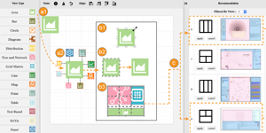 |
Composition and Configuration Patterns in Multiple-View Visualizations Xi Chen, Wei Zeng*, Yanna Lin, H. M. Al-maneea, J. C. Roberts, R. Chang IEEE Transactions on Visualization and Computer Graphics (Proc. IEEE InfoVis 2020), vol. 27, no. 2, pp. 1514-1524, 2021. [Homepage] [Paper] [Video] [Data] |
| 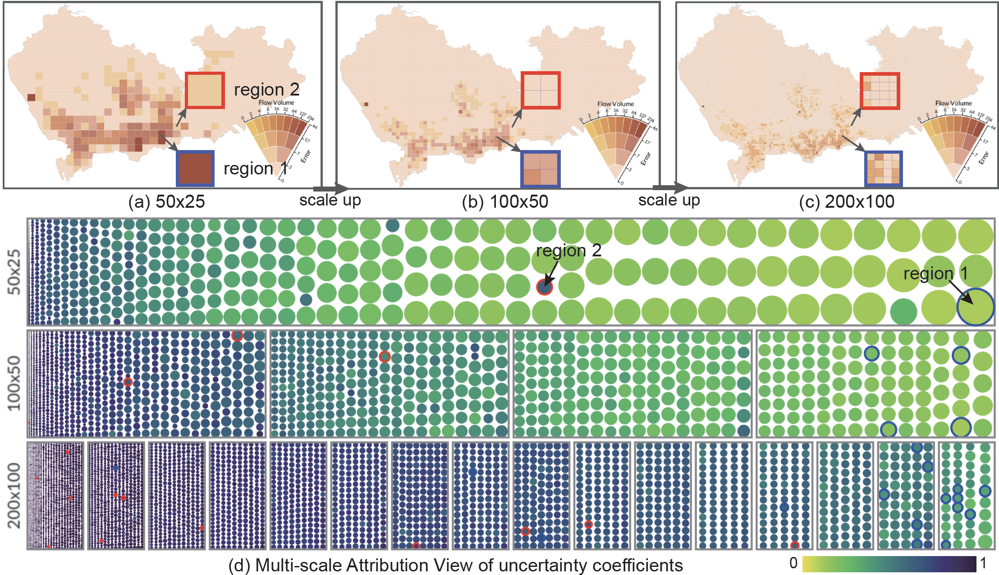 |
Revisiting the Modifiable Areal Unit Problem in Deep Traffic Prediction with Visual Analytics Wei Zeng, Chengqiao Lin, Juncong Lin*, Jincheng Jiang, Jiazhi Xia, C. Turkay, Wei Chen IEEE Transactions on Visualization and Computer Graphics (Proc. IEEE VAST 2020), vol. 27, no. 2, pp. 839-848, 2021. [Paper][Video] |
| 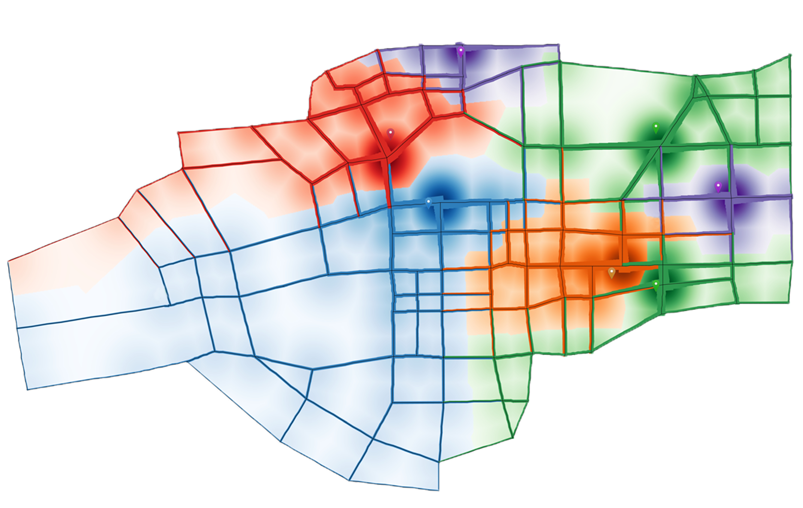 |
Topology Density Map for Urban Data Visualization and Analysis Zezheng Feng, Haotian Li, Wei Zeng*, Shuang-Hua Yang, Huamin Qu IEEE Transactions on Visualization and Computer Graphics (Proc. IEEE VAST 2020), vol. 27, no. 2, pp. 828-838, 2021. [Paper] |
| 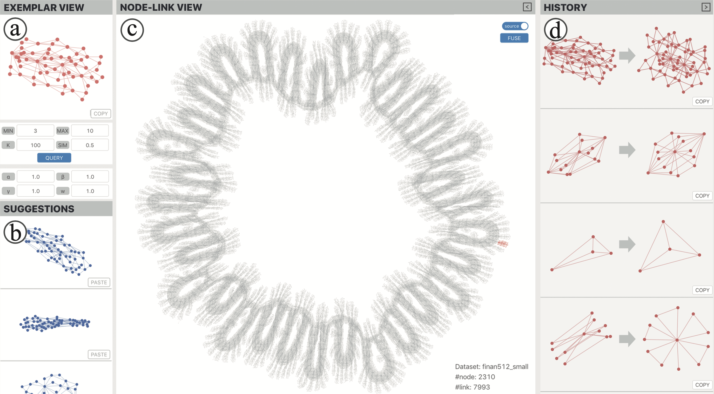 |
Exemplar-based Layout Fine-tuning for Node-link Diagrams Jiacheng Pan, Wei Chen, Xiaodong Zhao, Shuyue Zhou, Wei Zeng, Minfeng Zhu, Jian Chen, Siwei Fu, Yingcai Wu IEEE Transactions on Visualization and Computer Graphics (Proc. IEEE InfoVis 2020), vol. 27, no. 2, pp. 1655-1665, 2021. [Paper] |
| 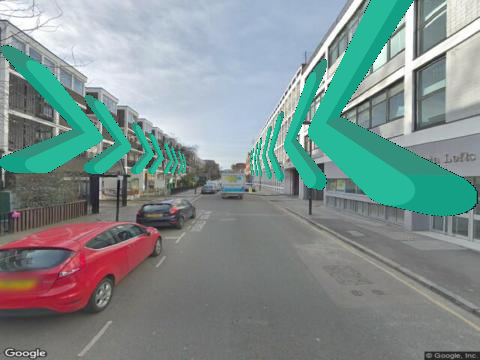 |
Deep Recognition of Vanishing-Point-Constrained Building Planes in Urban Street Views Zhiliang Zeng, Mengyang Wu, Wei Zeng*, and Chi-Wing Fu IEEE Transactions on Image Processing, vol. 29, pp. 5912-5923, 2020. [Paper] [DOI] |

|
LassoNet: Deep Lasso-Selection of 3D Point Clouds Zhutian Chen, Wei Zeng*, Zhiguang Yang, Lingyun Yu, Chi-Wing Fu, and Huamin Qu IEEE Transactions on Visualization and Computer Graphics (Proc. IEEE SciVis 2019) vol. 26, no. 1, pp. 195-204, 2020. [Paper] [Homepage] [Video] |
| 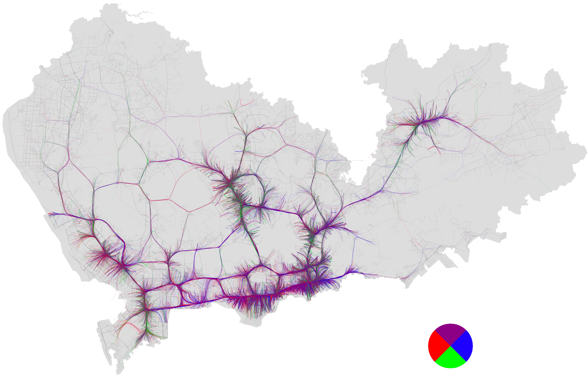 |
Route-Aware Edge Bundling for Visualizing Origin-Destination Trails in Urban Traffic Wei Zeng, Qiaomu Shen, Yuzhe Jiang, Alex Telea Computer Graphics Forum (Proc. EuroVis 2019) vol. 38, no. 3, pp. 581-593, 2019. [Paper] [Presentation] [DOI] [Video] |
| 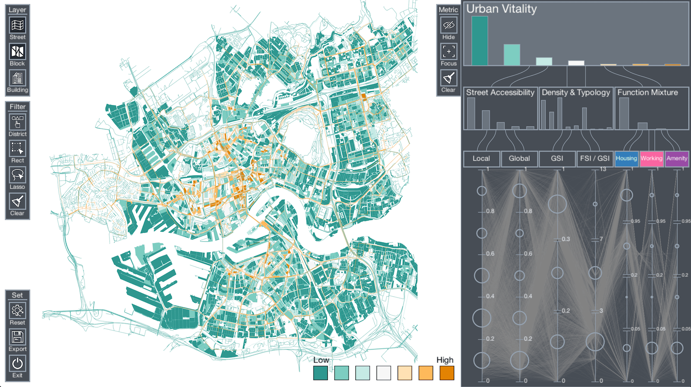 |
VitalVizor: A Visual Analytics System for Studying Urban Vitality Wei Zeng*, Yu Ye IEEE Computer Graphics and Applications (Special Issue on Visualization for Smart City Application), vol. 38, no. 5, pp. 38-53, 2018. [Paper] [DOI] [Video][Youku] |
| 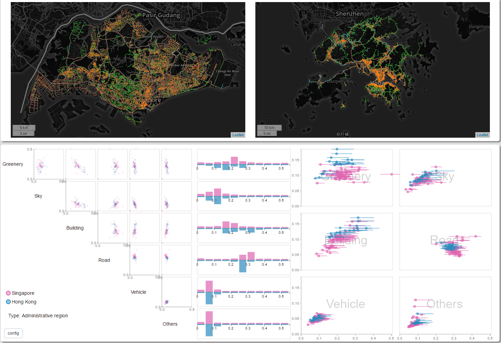 |
StreetVizor: Visual Exploration of Human-Scale Urban Forms Based on Street Views Qiaomu Shen, Wei Zeng*, Yu Ye, Stefan Müller Arisona, Simon Schubiger, Remo Burkhard and Huamin Qu IEEE Transactions on Visualization and Computer Graphics (Proceedings of IEEE SciVis'17) vol. 38, no. 5, pp. 38-53, 2018. [Paper] [DOI] [Video] [Youku] |
| 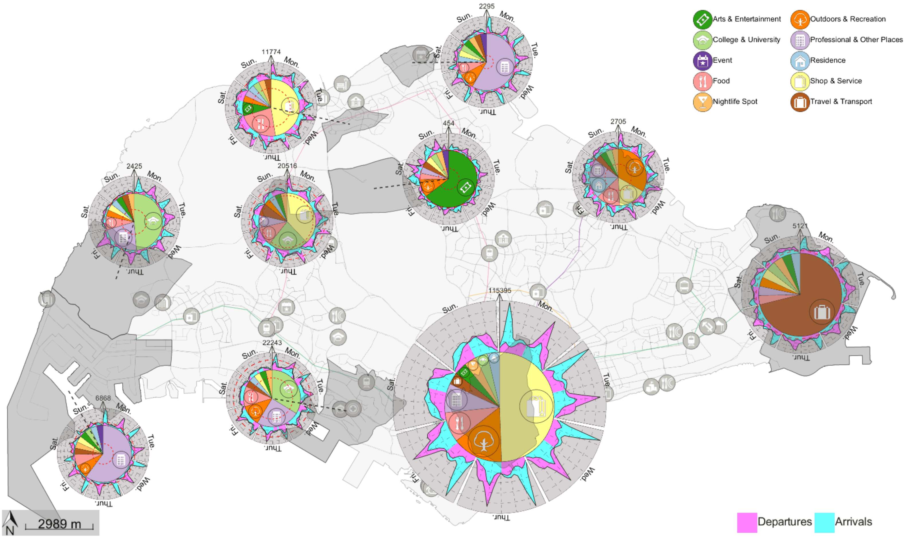 |
Visualizing the Relationship between Human Mobility and Points-of-Interest Wei Zeng, Chi-Wing Fu, Stefan Müller Arisona, Simon Schubiger, Remo Burkhard and Kwan-Liu Ma IEEE Transactions on Intelligent Transportation Systems (Special Issue on Visual Analysis for ITS) vol. 18, no. 8, pp. 2271-2284, 2017. [Paper] [DOI] [Video] [Youku] |
| 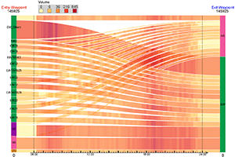 |
Visualizing Waypoints-Constrained Origin-Destination Patterns for Massive Transportation Data Wei Zeng, Chi-Wing Fu, Stefan Müller Arisona, Alexander Erath, Huamin Qu Computer Graphics Forum (Proceedings of EuroVis'16), vol. 35, no. 8, pp. 95-107, 2016. [Paper] [DOI] [Video] |
| 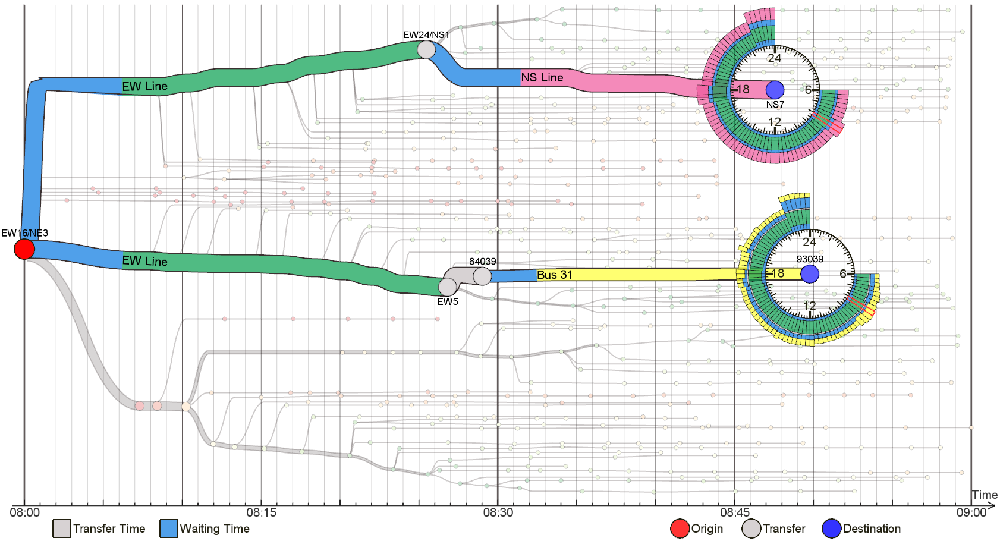 |
Visualizing Mobility of Public Transportation System Wei Zeng, Chi-Wing Fu, Stefan Müller Arisona, Alexander Erath, Huamin Qu IEEE Transactions on Visualization and Computer Graphics (Proceedings of IEEE VAST'14), vol. 20, no. 12, pp. 1833-1842, 2014. [Paper][DOI] [Video] [Youku] |
| 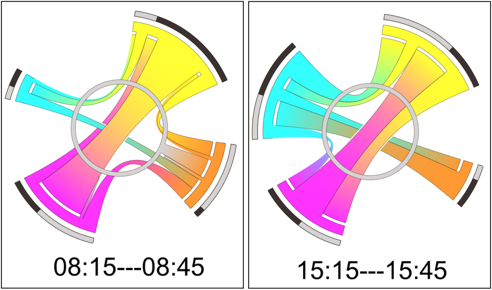 |
Visualizing Interchange Patterns in Massive Movement Data Wei Zeng, Chi-Wing Fu, Stefan Müller Arisona and Huamin Qu Computer Graphics Forum (Proceedings of EuroVis'13), vol. 32, no. 3pt3, pp. 271-280, 2013. [Paper] [DOI] [Video] [Youku] |